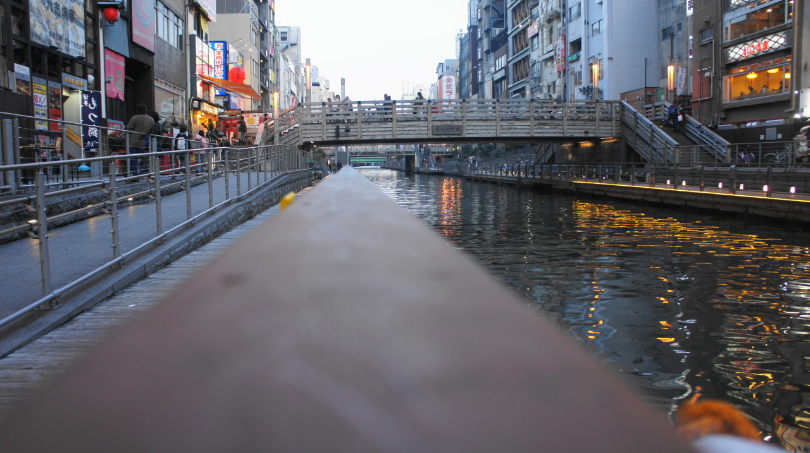

내가 보는 것은 무엇일까. 혼자하는 여행과, 둘이하는 여행의 차이점은 더 많은 눈이 비슷한 공간을 느낀다는 것이 아닐까 싶다.
더 많은 사람과, 내가 좋아하는 사람과 많은것을 느끼고 나누는 것이, 여행보다 더 좋은것이 있을까. 그리고, 그렇게 해서 소중해지지 않는 사람이 있을까.
내가 좋아하는 것이 있는만큼, 싫어하는 것이 있고. 그것이 전혀 이상한 것이 아니기에. 좀더 많이 좋아하려고 노력하고, 약간은 싫어하려고 노력하는 것은 나쁘지 않다. 아니. 좋다.
좋은 것이 나쁜것이고, 그만큼 나쁜것도 좋은것이다. 좋아한다고 해서 좋아할일도 없고, 싫어한다고 해서 싫어할일도 없다. 그냥 그것을 온전히 느끼는 것이 살아가는 방법이다. 그리고 나는 지금 살아가고 있다.